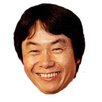
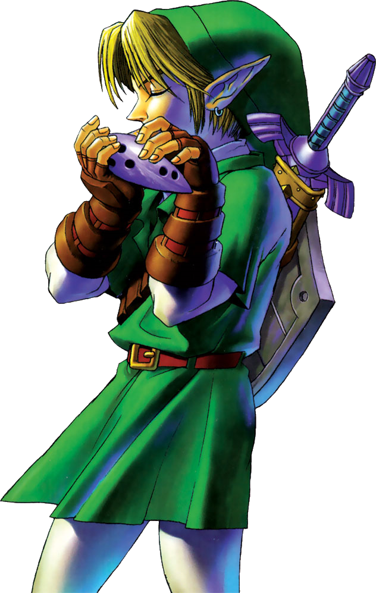

La franquicia The Legend of Zelda nació a mediados de los años 80 dentro de
Nintendo, impulsada principalmente por la visión creativa de Shigeru Miyamoto. A diferencia de otros
proyectos de la compañía en esa época, Zelda no fue concebida como un juego de acción inmediata,
sino como una experiencia de aventura centrada en la exploración, el misterio y el descubrimiento
gradual de un mundo desconocido.
La idea original de la saga estuvo fuertemente influenciada por la infancia de Miyamoto en Kioto.
Durante sus años como niño, solía explorar bosques, cuevas y zonas rurales sin mapas ni guías,
experimentando la emoción de encontrar lugares nuevos por su cuenta. Miyamoto quiso trasladar esa
sensación de curiosidad y asombro al jugador, permitiéndole explorar libremente y aprender sobre el
mundo del juego a través de la experiencia directa, no de explicaciones constantes.

La serie también destaca por su innovación en jugabilidad y exploración. Juegos como Ocarina of Time
marcaron un antes y un después en los videojuegos en 3D, mientras que títulos como Breath of the
Wild redefinieron el concepto de mundo abierto, dando al jugador una libertad casi total para
explorar y resolver desafíos. Cada entrega suele introducir mecánicas nuevas que influyen en la
evolución del género de aventuras.
Desde su concepción se establecieron elementos fundamentales que definirían la identidad de la
franquicia. El protagonista, Link, fue pensado como un héroe silencioso y de rasgos simples para que
el jugador pudiera proyectarse fácilmente en él. Su nombre simboliza el “enlace” entre el jugador y
el mundo del juego, reforzando la idea de inmersión personal en la aventura.
Otros datos de la franquia es que el título de la saga no hace referencia al protagonista, sino a la
princesa Zelda, una elección deliberada para aportar un tono elegante y mítico. El nombre fue
inspirado en Zelda Fitzgerald, y buscaba evocar misterio y nobleza, reforzando la sensación de estar
ante una leyenda más que una historia convencional centrada en un solo héroe.
En cuanto a la narrativa, la franquicia apostó desde el inicio por una historia mínima y poco
explícita. En lugar de largos diálogos o cinemáticas, el mundo, sus ruinas, enemigos y objetos
contaban la historia de forma indirecta. Este enfoque de narración ambiental permitió que el jugador
interpretara y descubriera el trasfondo del mundo por sí mismo.
Es importante destacar que The Legend of Zelda no fue creada con una cronología definida. Cada nueva
entrega se desarrolló inicialmente como una aventura independiente, reutilizando símbolos y
conceptos como Hyrule, la Trifuerza, Link y Ganon. Con el paso del tiempo, estos elementos formaron
una mitología coherente, que solo más adelante Nintendo organizó en una línea temporal oficial.
En esencia, la saga The Legend of Zelda se construyó alrededor de una filosofía clara: el placer del
descubrimiento. Más que priorizar una narrativa rígida o el realismo, la franquicia ha buscado
constantemente provocar en el jugador la sensación de aventura, asombro y exploración, manteniéndose
fiel a la emoción que inspiró su creación original.

Aquí te muestro
los juegos más importantes de la franquicia como el juego original The Legend of Zelda (1986), el
cual sentó las bases de la exploración y la estructura de la saga. A Link to the Past (1991) que
consolidó muchos de sus elementos fundamentales, Ocarina of Time (1998) marcó un antes y un después
al trasladar la fórmula a las tres dimensiones y redefinir el género de aventura, Wind Waker (2002)
que destacó por su estilo artístico y su enfoque narrativo, Twilight Princess (2006) por su tono más
oscuro y maduro, Skyward Sword (2011) por profundizar en los orígenes del mito. Finalmente, Breath
of the Wild (2017) y Tears of the Kingdom (2023) que revolucionaron la saga al replantear la exploración y la libertad del jugador,
influyendo de manera decisiva en el diseño de los mundos abiertos modernos.